8x8 Led Matrix
- The task was given to me to make 8x8 led matrix which can display things we want.
- The system used in traffic signals and on railway station to show schedule of trains works on this principle.
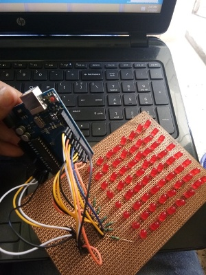
Step-1
- First I started with watching videos and gathering information about the components I would require.
- I started with collecting 64 led's and checking them if they are working properly or not.
- I used common row cathode method in which I connected anode (positive) vertically and cathode(negative) horizontally.
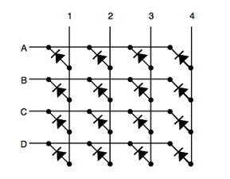
Step-2
- I started connecting led's as shown in circuit.
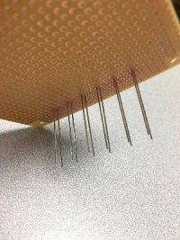
- Then I started soldering it
horizontally and then vertically.
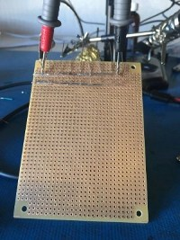
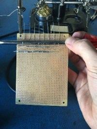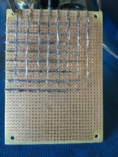
Step-3
- Then I added resistors to positive legs that is vertical line.
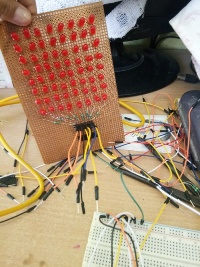
- Then I connected horizontal rows to header pins.
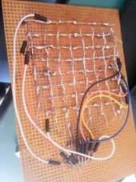
Step-4
- Then I connected all pins to arduino and uploaded code.
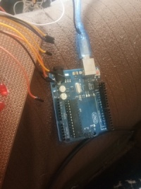
Problems I Faced
- I faced problem after soldering as when I checked my connections the soldering was not done properly.
- The other thing was when I first uploaded code it was not working so I thought there was problem in connection but afterwards I realized there was something wrong in program.
- So I uploaded other code and it worked..
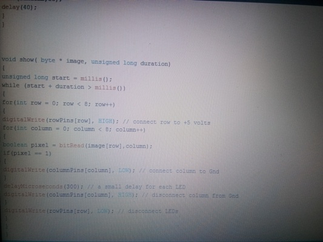
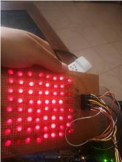
Things I Learned
- First it seemed to be very easy so I thought it would get complete in 3 days
- But when you actually do it practically then you will know what kind of problems come and how time consuming it is..
- How to manage multiple connection from one arduino.
- How to code multiple led's.
- How to do trouble shooting from starting to end.